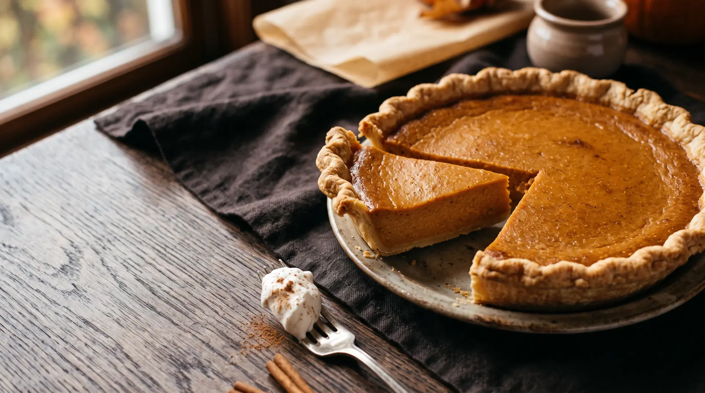
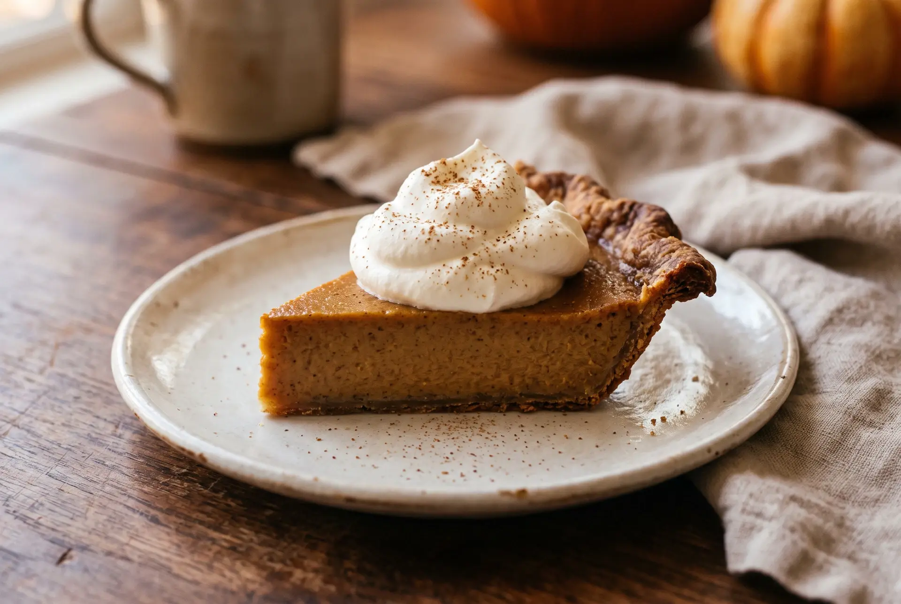

The autumn baking issue
The pie that makes the whole table go quiet.
A classic pumpkin pie with a buttery crust, a silken spiced center, and the kind of finish that earns a second slice before the coffee is poured.

favorite
01
Why we love it
A dependable classic, softly spiced.
This is the pumpkin pie to make when you want a sure thing. The filling relies on pure pumpkin, evaporated milk, eggs, and a compact chorus of cinnamon, ginger, and cloves. It bakes up plush and sliceable—not too sweet, never fussy.
From the copperwood kitchen
Classic pumpkin pie
A reliable, traditional version adapted for a 9-inch deep-dish shell. Use 100% pure pumpkin purée—not pre-sweetened pie filling—for that honest, warmly spiced flavor.
Ingredients
For one 9-inch pie- 1 9-inch unbaked deep-dish pie crust
- ¾ cup granulated sugar
- 1 tsp ground cinnamon
- ½ tsp fine salt
- ½ tsp ground ginger
- ¼ tsp ground cloves
- 2 large eggs
- 15 oz 100% pure pumpkin purée
- 12 fl oz evaporated milk
Method
Slowly, then beautifully-
01
Heat the oven.
Set a rack in the lower third of the oven and heat to 425°F / 220°C.
-
02
Build the spice base.
In a small bowl, combine the sugar, cinnamon, salt, ginger, and cloves.
-
03
Whisk the filling.
Lightly beat the eggs in a large bowl. Stir in the pumpkin and spice mixture, then gradually whisk in the evaporated milk until completely smooth.
-
04
Fill and flash-bake.
Pour the filling into the unbaked crust. Bake for 15 minutes at 425°F / 220°C.
-
05
Lower, then let it set.
Reduce the oven to 350°F / 175°C without opening the door. Bake 40–50 minutes more, until a knife inserted near the center comes out clean.
-
06
Cool completely.
Set the pie on a wire rack for 2 hours. Serve at room temperature or chill until ready to slice.

Kitchen notes
A few small things that make it exceptional.
Keep the pie shell cold.
Chill the filled shell while the oven finishes heating. A cold crust gives the butter a better chance to stay flaky.
Trust the gentle wobble.
The outer filling should look set while the very center still trembles slightly. It will finish setting as the pie cools.
Make it ahead.
Bake the pie a day ahead, let it cool fully, then cover loosely and refrigerate. Bring it toward room temperature before serving.
Store the last slice.
Refrigerate covered pie for up to four days. For the cleanest slices, use a thin knife dipped in warm water and wipe it between cuts.
03
Keep calm & bake on
If your pie needs a little help.
The crust is browning too quickly
Loosely tent the edge with a ring of foil for the final part of the bake. Keep the center uncovered so the filling can set.
The filling has a crack
That usually means it baked a touch too long. Cover it with softly whipped cream and call it charming; it will still taste lovely.
The center seems too soft
Give it its full cooling time. Pumpkin custard firms as it cools, so slicing early can make a perfectly baked pie look underdone.
Recipe provenance
Made from a famous, dependable formula.
This page is a lovingly presented adaptation of LIBBY’S® Famous Pumpkin Pie. Ingredient quantities and the two-temperature bake method were checked against the official recipe and Allrecipes’ tested publication of the same classic.